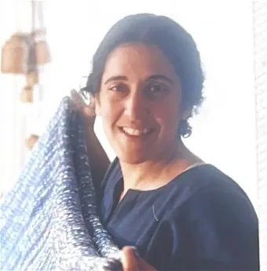
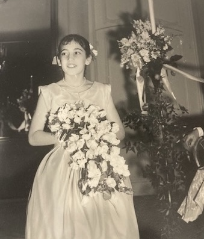
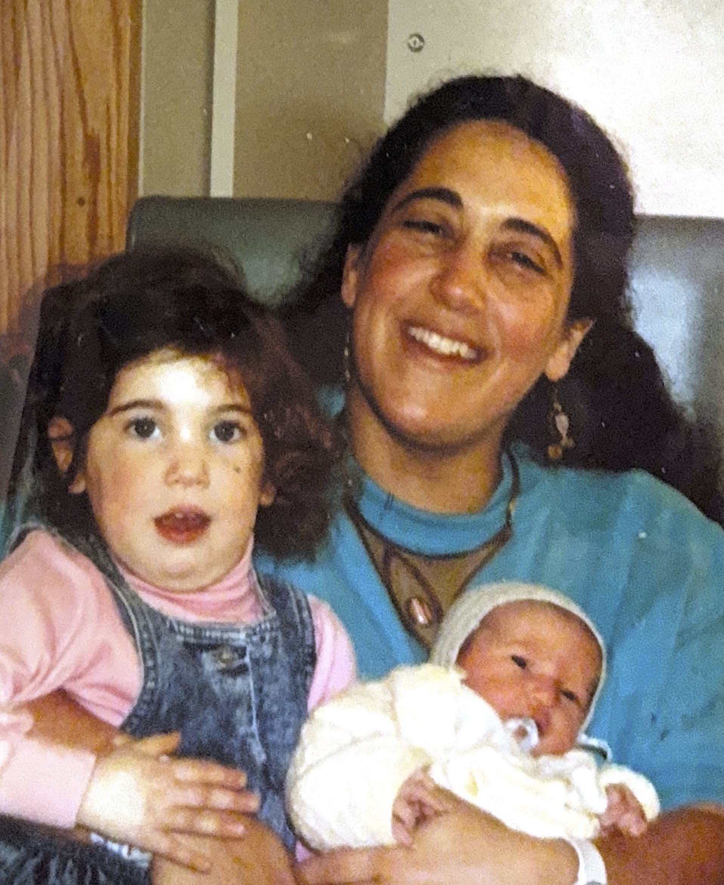
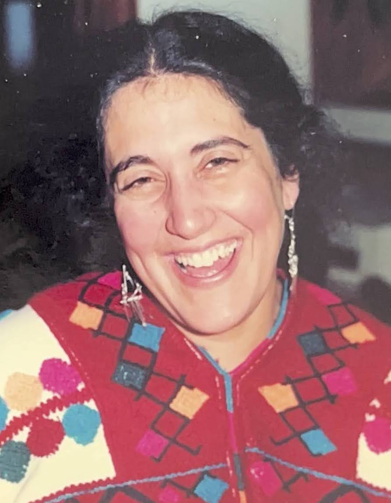
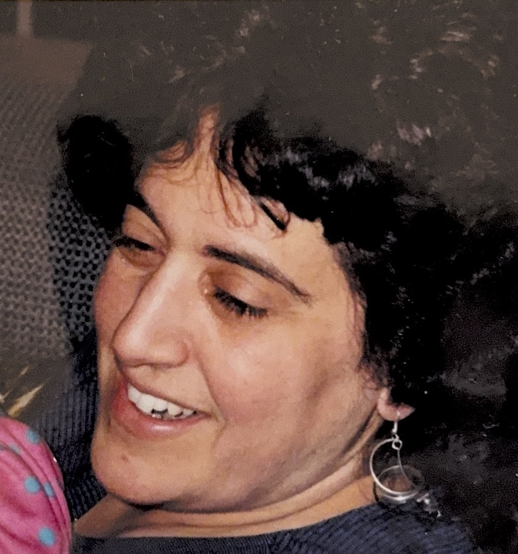
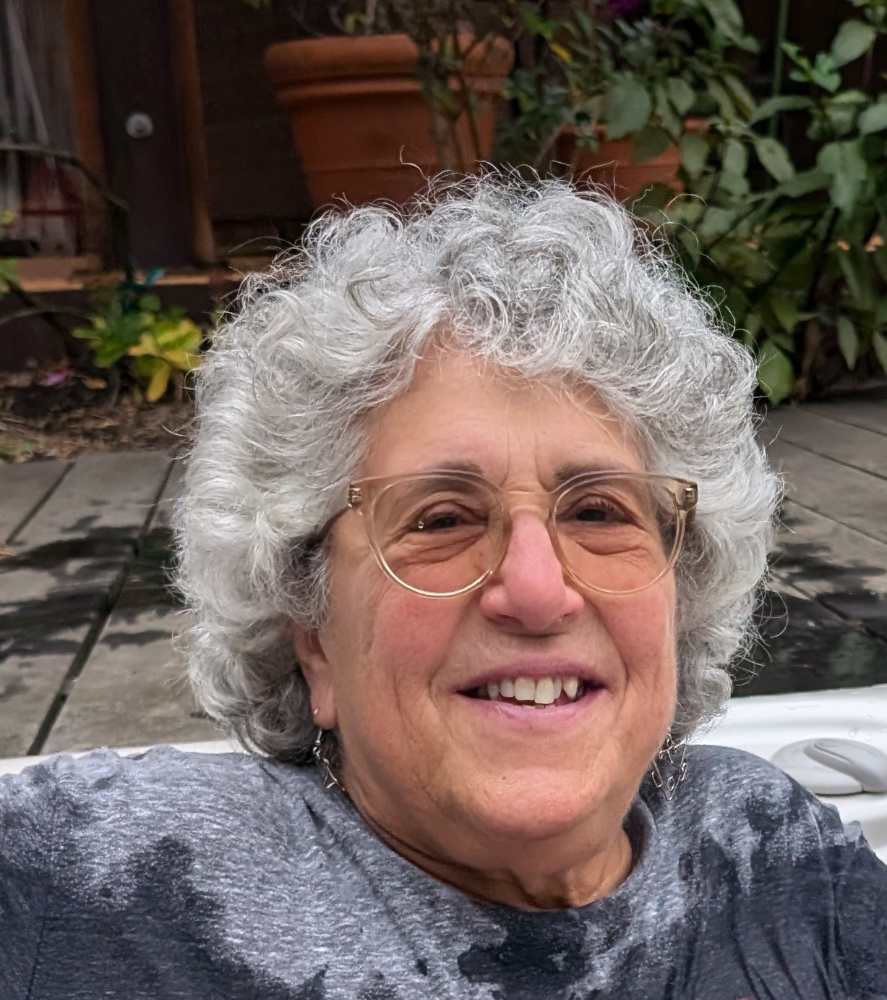

This is a page that Hannah and Aviva had set up in early 2025 for our mother, Ellen, from whom we get the "avid" in "Hamavid"1, among many other things. Originally, it was a place to help coordinate visits and care from her plethora of friends who lived nearby. Now, we're repurposing it as a place for memory gathering.

Click here for Ellen's Obituary
The long one, posted on Keefe Funeral Homes, Legacy, etc.

Click here to read remembrances from Ellen's funeral service on October 20, 2025
This document contains eulogies read at her service, as well as an overflow of memories from many additional loved ones. This link is read-only. If you want to add something, email Hannah for access.

Click here to see Ellen's 75th birthday Festschrift
This is a book comprised of stories and notes from Ellen's friends and family, compiled by Hannah and Aviva, and given to Ellen on her 75th birthday. It also includes the 76th birthday addendum.

Photos
Email Hannah for the link to a Google Photos album you can peruse or add to.

Memorial service livestream recording
Email Hannah for the link: hamavid at gmail dot com.

Donations
If you want to make a donation in Ellen's memory, here are a few organizations she cared about:
- The Michael J Fox Foundation - For Parkinson's Research
- Antioch College - Community in Action
- Southern Poverty Law Center - For Racial Justice Issues
- WBUR - Radio
- Human Rights Campaign - LGBTQ+ equality
- Heifer International - Ending hunger and poverty
- The Welcome Project - Somerville's leading immigrant organization
1 As in literally the "a-v-i-d" comes from "D-a-v-i-d-son". But, it's not not also her personality.